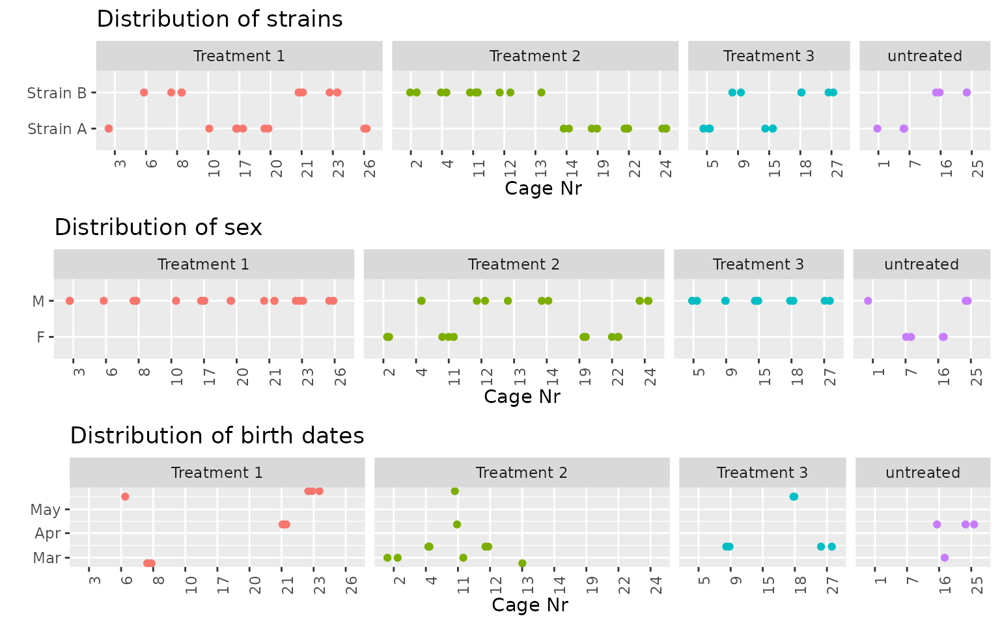
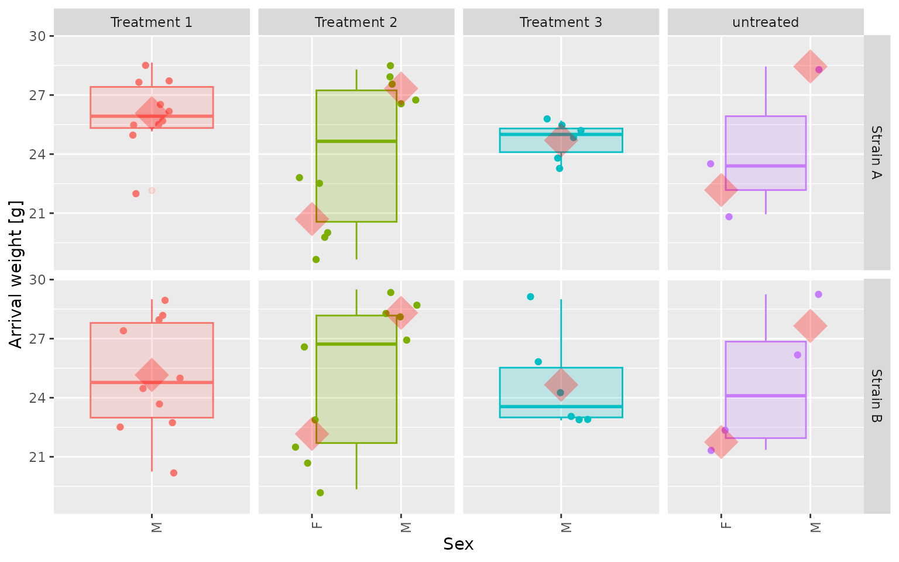

This example demonstrates how recurring complex design problems of similar structure may be handled by writing dedicated wrappers that use designIt functionality in the background while presenting a simplified interface to the user. These wrapper functions may completely hide the construction of batch containers, scoring functions and other fundamental package concepts from the user, allowing to focus on the correct specification of the concrete design task at hand.
We are using the very specific design constraints of certain in vivo studies as an example. The implementation of the respective wrapper functions won’t be discussed here, but code may be inspected in the .Rmd file of the vignette if desired.
We would like to assign 3 treatment conditions to a cohort of 59 animals, representing 2 relevant strains. There are a few concrete user specified constraints for the study, on top we have to avoid confounding by common variables such as animal sex, body weight and age.
The animal information is provided in a sample sheet, the treatment list has to be stored separately. The example data we are looking at is included in the package.
str(invivo_study_samples)
#> 'data.frame': 59 obs. of 8 variables:
#> $ AnimalID : chr "F1" "F2" "F3" "F4" ...
#> $ Strain : chr "Strain B" "Strain B" "Strain B" "Strain B" ...
#> $ Sex : chr "F" "F" "F" "F" ...
#> $ BirthDate : Date, format: "2021-05-24" "2021-03-01" ...
#> $ Earmark : chr "R" "2L" "2L1R" "L" ...
#> $ ArrivalWeight : num 19.4 26.5 20.8 22.1 22.9 ...
#> $ Arrival.weight.Unit: chr "g" "g" "g" "g" ...
#> $ Litter : chr "Litter 1" "Litter 2" "Litter 2" "Litter 2" ...
invivo_study_samples %>%
dplyr::count(Strain, Sex, BirthDate) %>%
gt::gt()| Strain | Sex | BirthDate | n |
|---|---|---|---|
| Strain A | F | NA | 7 |
| Strain A | M | NA | 22 |
| Strain B | F | 2021-03-01 | 4 |
| Strain B | F | 2021-04-12 | 2 |
| Strain B | F | 2021-05-24 | 1 |
| Strain B | M | 2021-02-22 | 4 |
| Strain B | M | 2021-03-15 | 8 |
| Strain B | M | 2021-04-12 | 5 |
| Strain B | M | 2021-05-17 | 3 |
| Strain B | M | 2021-05-24 | 3 |
A simple data summary reveals that the cohort is almost equally composed of Strains A and B. There are male and female animals in quite different proportions, with a noticeable excess of the males. Birth dates are available for Strain A, but missing completely for Strain B.
Initial body weights (arrival weights), identifying ear marks and litter information are available for all animals. The litter is nested within the strain and all individuals within one litter naturally share one birth date.
| Strain | Litter | BirthDate | n |
|---|---|---|---|
| Strain A | Litter 10 | NA | 5 |
| Strain A | Litter 11 | NA | 7 |
| Strain A | Litter 12 | NA | 7 |
| Strain A | Litter 13 | NA | 4 |
| Strain A | Litter 14 | NA | 6 |
| Strain B | Litter 1 | 2021-05-24 | 4 |
| Strain B | Litter 2 | 2021-03-01 | 4 |
| Strain B | Litter 3 | 2021-04-12 | 7 |
| Strain B | Litter 4 | 2021-03-15 | 4 |
| Strain B | Litter 5 | 2021-02-22 | 4 |
| Strain B | Litter 6 | 2021-03-15 | 4 |
| Strain B | Litter 7 | 2021-05-17 | 3 |
str(invivo_study_treatments)
#> 'data.frame': 59 obs. of 3 variables:
#> $ Treatment: chr "Treatment 1" "Treatment 1" "Treatment 1" "Treatment 1" ...
#> $ Strain : chr "Strain A" "Strain A" "Strain A" "Strain A" ...
#> $ Sex : chr "M" "M" "M" "M" ...
invivo_study_treatments %>%
dplyr::count(Treatment, Strain, Sex) %>%
gt::gt()| Treatment | Strain | Sex | n |
|---|---|---|---|
| Treatment 1 | Strain A | M | 10 |
| Treatment 1 | Strain B | M | 10 |
| Treatment 2 | Strain A | F | 5 |
| Treatment 2 | Strain A | M | 5 |
| Treatment 2 | Strain B | F | 5 |
| Treatment 2 | Strain B | M | 5 |
| Treatment 3 | Strain A | M | 6 |
| Treatment 3 | Strain B | M | 6 |
| untreated | Strain A | F | 2 |
| untreated | Strain A | M | 1 |
| untreated | Strain B | F | 2 |
| untreated | Strain B | M | 2 |
We have 3 treatments that should each be administered to a defined number of animals. In addition, some satellite animals of either strain will not receive any treatment at all, which is specified by a fourth (‘untreated’) condition.
In most cases the treatment list could be reduced to the first column, i.e. repeating each label for the right number of times so that the total length matches the sample sheet.
However, additional study specific constraints may be specified by adding columns that also appear in the animal list and indicate how the treatments should be assigned to subgroups of the cohort. In this example, a different number of animals is used for each of the treatments, balanced across strains. However, female animals are only to be used for treatment 2.
The specific constraints for our type of in vivo study may be summarized as follows:
The very special and intricate nature of these requirements motivate the creation of dedicated functionality on top of this package, as demonstrated by this vignette.
Before using these functions, we add two auxiliary columns to the sample sheet:
AgeGroup represents the different birth dates as an integer variable, where unknown (NA) values get their own code.
Litter_combine_females groups all female animals in a pseudo litter, facilitating the assignment of animals to cages at which point only the females can be freely combined (co-housed).
invivo_study_samples <- dplyr::mutate(invivo_study_samples,
AgeGroup = as.integer(factor(BirthDate, exclude = NULL)),
Litter_combine_females = ifelse(Sex == "F", "female_all", Litter)
)
invivo_study_samples %>%
dplyr::count(Strain, Litter_combine_females, BirthDate, AgeGroup) %>%
gt::gt()| Strain | Litter_combine_females | BirthDate | AgeGroup | n |
|---|---|---|---|---|
| Strain A | female_all | NA | 7 | 7 |
| Strain A | Litter 10 | NA | 7 | 3 |
| Strain A | Litter 11 | NA | 7 | 4 |
| Strain A | Litter 12 | NA | 7 | 5 |
| Strain A | Litter 13 | NA | 7 | 4 |
| Strain A | Litter 14 | NA | 7 | 6 |
| Strain B | female_all | 2021-03-01 | 2 | 4 |
| Strain B | female_all | 2021-04-12 | 4 | 2 |
| Strain B | female_all | 2021-05-24 | 6 | 1 |
| Strain B | Litter 1 | 2021-05-24 | 6 | 3 |
| Strain B | Litter 3 | 2021-04-12 | 4 | 5 |
| Strain B | Litter 4 | 2021-03-15 | 3 | 4 |
| Strain B | Litter 5 | 2021-02-22 | 1 | 4 |
| Strain B | Litter 6 | 2021-03-15 | 3 | 4 |
| Strain B | Litter 7 | 2021-05-17 | 5 | 3 |
The process of solving the design problem can be divided into 3 successive steps, each of which is addressed by a specific in vivo-specific wrapper function.
Assign treatments to individuals animals (function InVivo_assignTreatments())
Allocate animals to cages (function Invivo_assignCages())
Arrange cages in one or more racks of given dimension (function Invivo_arrangeCages())
Dedicated constraints have to be handled at each step, as is reflected in the interface of those wrappers.
As stated above, implementation details are beyond the scope of this example. We will instead just show the interfaces of the three wrappers, run the example case and visualize the resulting design.
InVivo_assignTreatments <- function(animal_list, treatments,
balance_treatment_vars = c(),
form_cages_by = c(),
n_shuffle = c(rep(5, 100), rep(3, 200), rep(2, 500), rep(1, 20000)),
quiet_process = FALSE, quiet_optimize = TRUE) {
(...)
}The function works with the initial animal and treatment lists.
Most importantly, balance_treatment_vars lists the variables that should be balanced across treatments (e.g. strain, sex, body weight, age, litter). Different scoring functions will be created for categorical and numerical covariates.
form_cages_by is not mandatory, but gives important clues regarding the variables that will later be homogeneous within each cage (e.g. strain, sex, litter). Providing this may be crucial for finding good solutions with a low number of single-housed animals that don’t fit into any other cage.
It is also possible to modify the shuffling protocol and toggle messaging on the level of processing steps as well as optimization iterations.
Invivo_assignCages <- function(design_trt,
cagegroup_vars,
unique_vars = c(),
balance_cage_vars = c(),
n_min = 2, n_max = 5, n_ideal = 2, prefer_big_groups = TRUE, strict = TRUE,
maxiter = 5e3,
quiet_process = FALSE, quiet_optimize = TRUE) {
(...)
}This wrapper takes the output of the previous step (‘design_trt’) as input.
cagegroup_vars is a list of variables that must be uniform within each cage (e.g. treatment”, strain, sex, litter).
unique_vars is a list of variables whose values should be unique per cage (e.g. ear marking). This constraint will be relaxed in a stepwise way if no solution can be found under strict adherence.
balance_cage_vars lists variables which should be evenly distributed across cages, as far as possible (e.g. age, body weight).
n_min, n_max and n_ideal specify the minimal, maximal and ideal cage sizes, respectively. It is often necessary to release the strict criterion to find any solution at all or reduce the number of remaining single-housed animals.
Invivo_arrangeCages <- function(design_cage,
distribute_cagerack_vars = "Treatment",
rack_size_x = 4,
rack_size_y = 4,
n_shuffle = c(rep(5, 100), rep(3, 400), rep(2, 500), rep(1, 4000)),
quiet_process = FALSE, quiet_optimize = TRUE) {
(...)
}This wrapper takes the output of the previous step (‘design_cage’) as input.
distribute_cagerack_vars is a list of variables that should be evenly spaced out across the rows and columns of a rack (or several racks, if needed). Typical cases may include treatment, strain and sex of the animals.
rack_size_x and rack_size_y specify the number of cages that fit into the rows and columns of a grid like rack, respectively. Depending on the actual number of cages, one or more racks are automatically assigned. Only rectangular sub-grids may be used of any rack to accommodate the cages.
A full run of the three wrapper functions is executed below, printing messages on the level of processing steps, but not the iterations within every optimization.
set.seed(44)
# Assign treatments to animals, respecting user provided as well as passed constraints
design_trt <- InVivo_assignTreatments(invivo_study_samples, invivo_study_treatments,
form_cages_by = c("Strain", "Sex", "Litter_combine_females"),
balance_treatment_vars = c("Strain", "Sex", "ArrivalWeight", "AgeGroup"),
n_shuffle = c(rep(5, 200), rep(3, 300), rep(2, 500), rep(1, 3000)),
quiet_process = FALSE,
quiet_optimize = TRUE
)
# Form cages with reasonable animal numbers and compliant with all constraints
design_cage <- Invivo_assignCages(design_trt,
cagegroup_vars = c("Treatment", "Strain", "Sex", "Litter_combine_females"),
unique_vars = c("Earmark"),
balance_cage_vars = c("ArrivalWeight", "AgeGroup"),
n_min = 2, n_max = 5, n_ideal = 2, prefer_big_groups = T, strict = F,
maxiter = 1000,
quiet_process = FALSE,
quiet_optimize = TRUE
)
# Arrange cages in sub-grid of one rack (or several racks), avoiding spatial clusters
design_rack <- Invivo_arrangeCages(design_cage,
distribute_cagerack_vars = c("Treatment", "Strain", "Sex"),
rack_size_x = 7,
rack_size_y = 10,
n_shuffle = c(rep(5, 100), rep(3, 200), rep(2, 300), rep(1, 500)),
quiet_process = FALSE,
quiet_optimize = TRUE
)There are 27 cages in total.
Strains and age groups should be evenly split (balanced) across the treatments. Also,in each cage there should be only animals with the same treatment, strain and sex.
Females are exclusively used for treatment 2, as was specified in the treatment list.

Body weights should be balanced across treatments as well as possible.
The plot illustrates that this is true for the overall weight distribution (box plots). Interestingly, as there are females (associated with considerable less body weight) involved in treatment 2, the optimization favored the selection of heavier males in this group to compensate, achieving better cross-treatment balance of this factor.
Red diamonds mark the mean values for a specific sex within each treatment group.
